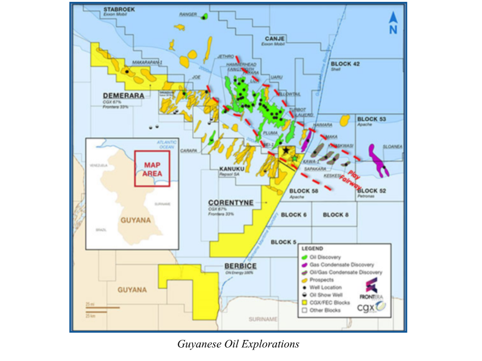
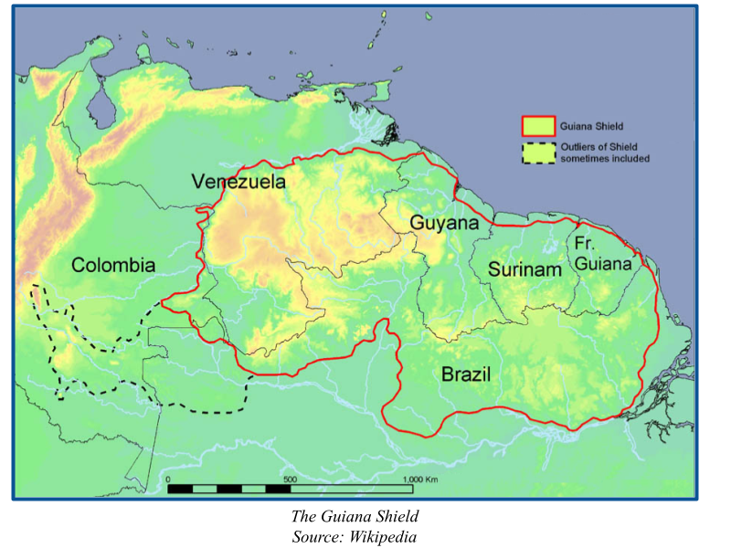
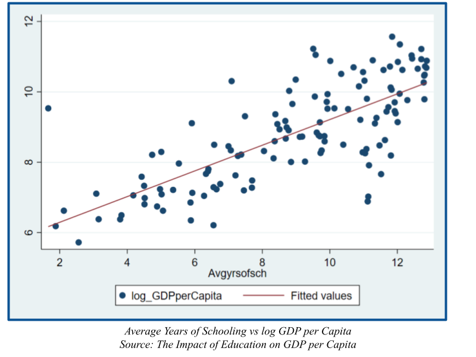
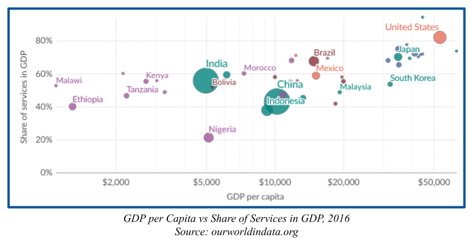

Guyana stands at a critical junction in national development. Major oil discoveries in the Caribbean starting in 2014 have set Guyana up for easy short-term economic success. The long-term prosperity of the nation, however, will depend on the ability of the Guyanese government to reinvest oil proceeds in a way that fosters economic diversification and raises human capital. Furthermore, Guyana stands in a precarious position with regards to human-driven climate change, with much of its capital city, Georgetown, expected to be underwater in the next 20 years, due to both rising sea levels and ground sinkage. 85% of Guyana is covered by rainforest, a biome often under threat of deforestation for logging or mining operations.

Guyana’s position as a bulwark in the fight for climate security is not merely a hindrance, though. In pursuing climate justice and low-carbon solutions for development (Guyana’s Low Carbon Development Strategy, or LCDS), Guyana has raised over $187 million USD since December 2022 alone by selling carbon credits to major world manufacturers. The proceeds from these sales have fueled not only Guyana’s meteoric rise in per capita GDP, increasing by 42.3% on average since 2019 and launching Guyana to the top of median incomes in South America, but also critical infrastructure projects that aim to secure Guyana’s economic future. A 140-mile natural gas pipeline from the offshore oil fields to the capital, in the works as of 2024, will reduce Guyana’s dependence on imported refined fuel, reducing the frequency of disruptive power outages that have plagued Georgetown even since the oil boom.
Guyana must take vital steps in the coming years to ensure its peoples’ security in a world committed to eliminating fossil fuels. Reinvestment into education, infrastructure, and diversified interests will be key to prevent Guyana from slipping into corrupt negligence like its westerly neighbor. Reexamining contracts with foreign interests to secure a larger cut of oil profits may also be beneficial and viable, to prevent the drainage of natural resource wealth out of the country.
In 2015, a major offshore oil discovery was made in the Stabroek block, 120 miles off the coast of Guyana, representing 32% of discovered oil since 2015 as of 2024. For the underdeveloped, sparsely populated South American country, this find was many times larger per capita than any similarly sized oil chartings since the Persian Gulf was mapped in the 1940s. As exemplified by the many other petrostates around the world, an outsized oil boon irrevocably changes the developmental path of a nation. If the proceeds of oil drilling are reinvested responsibly, a discovery of this magnitude can secure the prosperity of a nation for decades, such as in the cases of Norway, several of the Gulf states, and to a lesser extent Canada. For Guyana, however, the most harrowing tale of squandered oil wealth lies right at their doorstep; Venezuela, a state with plummeting oil revenues, rampant corruption, severe economic pain points, and no end in sight to these plights.
Guyana’s fate is important to the discussion of national development whichever way it falls, as there are already similarly underdeveloped nations in sub-Saharan Africa discovering oil deposits just off their own shores, and there will almost certainly be more in the future. Guyana will either serve as a success story, even a playbook, on how to leverage fossil fuel resources in the 21st century for economic betterment, or it will serve as yet another cautionary tale of wasted potential in South America.
There are three pieces to Guyana’s current puzzle: the oil boom itself, the environmental ramifications of drilling and Guyana’s place in the fight against climate change, and the ongoing transition from petrostate to diversified economy. The LCDS, launched by Guyana’s majority party in 2009, aims to address concerns regarding Guyana’s economic development with initiatives aimed at growing climate-resilient agriculture, expanding and restoring the mangrove regions on the coast, and meeting the UN pledge to have net zero emissions by 2050. These environmental initiatives are coupled with infrastructure and job development programs to diversify the economy away from oil and gas by offering incentives in the agricultural, business service, health, information technology, and renewable energy sectors.
Since oil was discovered in the Stabroek block in 2014, Guyana’s real GDP has increased by an annual average of 19.3%, which is unprecedented economic growth even for a centrally organized, internally stable, resource-rich country like China in the 1980s. By most macroeconomic metrics, Guyana is improving rapidly. The less desirable details of this progress are lost in the numbers, however. While the oil boom has attracted much foreign attention and investment, that investment has not yet made its way into rural areas of the country. Huge wealth disparity between those who are involved in the oil and gas sector and those who are not has led to increased socioeconomic tensions in a country already divided along racial lines. The top ten percent in personal wealth hold 61.5% of the nation’s assets, while the bottom half holds only 4.3%, as of 2022. Critical to this wealth inequality is inequality in education. While the average Guyanese student is expected to attend 12.2 years of schooling, this only equates to 6.8 years of schooling in Learning-Adjusted Years of Schooling (LAYS), indicating a low quality of education that fails to prepare students for lucrative, stable jobs in services or burgeoning advanced industries. Despite these shortcomings, the impact of the oil industry on Guyana has been widely well-received and encouraged.
While the whole world may have their eyes on Guyana, their minds are on Venezuela. One of the key questions the government of Guyana must ask itself is how to avoid the pitfalls that brought down the once-promising petrostate next door. A critical mistake often cited in the case of Venezuela is Hugo Chavez’s nationalization of the oil industry. While this decision may seem beneficial at face value, removing the predatory American oil companies from the transaction and saving more oil profits for domestic use, the reality was that Venezuela was not ready to fully control its own oil production. Nationalization led to mismanagement and corruption, while politicians funneled oil money out of the country. Inefficiencies in government led to a slow decline in oil production, from 3.2 million barrels per day (bpd) in 2000 to 735,000 bpd in 2023, as machines lacked maintenance or the skilled workers to operate them. Investor confidence plummeted as investors were hesitant to commit resources to a country unbeholden to U.S. law, seeing the risk of asset seizure or unfavorable terms of trade as too high. The seasoned American oil companies also brought a high level of technical expertise, resources, and business acumen that the Venezuelan government failed to provide on its own.
A more robust and safe play for Venezuela would have been, and should now be for Guyana, to slowly build up its own oil infrastructure and skilled labor force, and subsequently use the threat of nationalization to negotiate better terms of trade with the oil companies. If Guyana can force a credible threat of nationalization, ExxonMobil is likely to allow them to negotiate a more favorable deal, rather than see themselves cut out of the profit altogether.
The Guiana Shield, a six-country, 1.7 billion-year-old geological formation on the northern coast of South America, is home to one of the most pristine rainforests on Earth. It holds 20% of the world’s freshwater and 18% of the world’s tropical forest carbon. These forested regions, particularly in Brazil and Venezuela, are frequently the target of industrial logging and mining operations, destroying carbon-trapping trees that are critical to South America’s fight against climate change. Guyana’s portion of this rainforest, covering 85% of the country, has allowed it to remain carbon-negative even as oil production has ramped up to 645,000 bpd. The sheer carbon-carrying capacity of this rainforest allows Guyana to pursue a policy of moderation, rather than a true scaling back of industrialization.
This fact somewhat uniquely positions Guyana to meet the lofty UN goal of being carbon-neutral by 2050 while still developing economically. The LCDS aims to meet economic goals while still remaining carbon-neutral or carbon-negative, and emphasizes leveraging the natural resources of Guyana to ensure the continued protection of the rainforest, the ocean, and the biodiversity seen in both. For example, conservation operations by the government earn carbon credits, which rather than being used, are sold to the voluntary carbon market. The proceeds from these sales, totaling over $187 million in the last 2 years alone, were used to grant deep-rainforest villages the titles to their land and increase the standard of living in those villages.
Other initiatives aim to reduce the climate impact of industries that are still considered essential to Guyana’s national interest, such as mineral mining. Extensive mapping of the mining districts will result in less roadbuilding and less deforestation, without crippling the mining industry, which makes up 16% of Guyana’s GDP. Reforestation of mined areas that are no longer useful for mining is another way the LCDS aims to reduce net emissions. LCDS 2030 also includes participation in a Canadian-funded program to provide training and certification for Caribbean youth in areas related to low-carbon economics. Educational and training facilities for technical skills such as energy auditing, installation, and servicing of solar and wind components are also planned.
One metric that separates a true petrostate from a more balanced major oil exporter like Norway is the share of services as a percent of national GDP. Norway exhibits a near-even split between industry and services as portions of GDP. Mixed economies like Norway, Canada, and the U.S. are generally more robust, less prone to shocks in the oil market, and display higher median incomes than true petrostates. Additionally, in a world increasingly concerned with climate change and committed to net-zero emissions, relying strictly on oil windfall as a source of national revenue is risky, even disastrous in Venezuela’s case. For Guyana to transition into a more service-based economy, the critical ingredient is education.
Runde et al. write for the Center for Strategic and International Studies that “globally, investments in education underpin social cohesion, economic growth, competitiveness, and innovation”. Economic growth for Guyana is nearly a given, but competition, social cohesion, and innovation are all goals yet to be achieved. For Guyana to become competitive in industries besides oil and gas, innovation and investment in skilled labor will be paramount.
Guyana can create opportunities for higher education and higher quality of education by reinvesting oil proceeds and maintaining proper monetary policy to induce a high savings rate. Weatherly, Lopez, and Tierra show in their aptly named paper “The Impact of Education on GDP per Capita” that countries with high rates of education and high savings rates tend to display higher per capita GDPs, both in the Solow model and in reality. Guyana must aim to induce these conditions to both continue advancing median income, as well as diversifying the economy to insure against shocks in the oil and gas markets.
The choice of economic policy for Guyana going forward must meet two goals: infrastructural development, in transportation, education, finance, and others. The other objective is to remain carbon-zero or carbon-negative, in order to both protect the prized Guianan rainforest and act as a role model for other burgeoning oil economies.
Careful consideration of Guyana’s specific circumstances and Venezuela’s past mistakes indicates that Guyana should work with the multinational oil companies, rather than nationalizing the industry. Furthermore, the leverage maintained by allowing the oil companies to operate in its bounds may be used to negotiate a better deal for national betterment. To pivot from an oil-and-gas-based economy into a service-based mixed economy, Guyana should use proceeds raised by taxing oil production to create a sovereign wealth fund, similar to close business partner Norway. This diversified sovereign wealth fund will generate interest that can be used to sustainably grow many sectors of an advanced economy, and provide the strong social safety net that has proved so effective in Scandinavia. Due to Guyana’s special position in the Guiana Shield, all these economic goals can be met while remaining carbon-neutral or carbon-negative.
If Guyana leverages its oil boom carefully and conservatively, it can become the crown jewel of the Caribbean and South America, and secure its people’s success for generations.